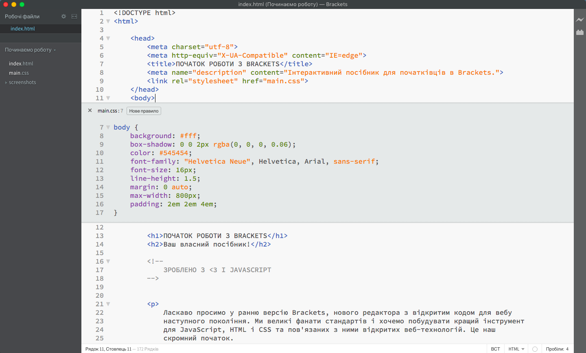

Ласкаво просимо у ранню версію Brackets, нового редактора з відкритим кодом для вебу наступного покоління. Ми великі фанати стандартів і хочемо побудувати кращий інструмент для JavaScript, HTML і CSS та пов'язаних з ними відкритих веб-технологій. Це наш скромний початок.
Багато у чому, Brackets - незвичайний редактор. Одна примітна особливість у тому, що цей редактор написаний на JavaScript, HTML та CSS. Це означає, що більшість користувачів Brackets мають необхідні навички для доопрацювання і розширення редактора. Насправді, ми використовуємо Brackets кожен день для того, щоб покращувати його. Він так само має декілька особливостей, таких як Швидке Редагування, Інтерактивний Перегляд та інших, які ви не зможете знайти у інших редакторах. Читайте далі для того, щоб дізнатися, як використовувати ці особливості редактора.
Тепер ніякого перемикання між документами і втрати контексту. Під час редагування HTML використовуйте поєднання клавіш Cmd/Ctrl + E для відкриття швидкого редактора, який показує все пов'язане з цим рядком CSS. Зробіть зміну CSS-стилів, натисніть ESC і поверніться назад до редагування HTML. Або просто залиште блок з CSS-правил відкритим, і вони стануть частиною вашого HTML-редактора. Якщо ви натиснете ESC поза швидким редактором, усі CSS-правила закриються.
Хочете побачити це в дії? Поставте курсор на тезі вище і натисніть Cmd/Ctrl + E. Ви повинні побачити, як вище з'явиться швидкий редактор CSS. Праворуч ви побачите список CSS-правил, які відносяться до цього тегу. Просто прокрутіть правила вниз, використовуючи Alt + Up/Down, щоб знайти те, що ви хочете відредагувати. Ви так само можете використовувати ці гарячі клавіши при роботі з кодом JavaScript, для того, щоб побачити зміст функції, просто наведіть курсор на її назву. На даний момент всередині вбудованого редактора не можна відкрити ще один, тому ви можете використовувати тільки Швидке Редагування, коли курсор знаходиться у "повноекранному" редакторі.
Ви знаєте цю мороку зі "зберегти / перезавантажити", яку ми робимо роками? Коли ви робите зміни у вашому редакторі, натискаєте зберегти, перемикаєтеся у браузер і потім натискаєте перезавантажити, щоб нарешті побачити результат? Разом з Brackets цього більше не доведеться робити.
Brackets відкриє пряме з'єднання з вашим локальним браузером та направить ваші зміни CSS, як тільки ви їх надрукуєте! Ви, можливо, вже робили щось подібне з інструментами, вбудованими в браузер, але з Brackets більше немає потреби копіювати та вставляти фінальний CSS назад у редактор. Ваш код запускається у браузері, але живе у вашому редакторі!
З Brackets стало простіше зрозуміти, як зміни в HTML і CSS позначаться на сторінці. Коли ваш курсор знаходиться на CSS-правилі, Brackets підсвітить всі його елементи в браузері. Те ж саме і з редагуванням HTML-файлу, Brackets буде підсвічувати відповідні HTML-елементи у браузері.
Якщо у вас є встановлений Google Chrome, ви можете спробувати це самі. Натисніть на іконку блискавки у правому верхньому кутку або натисніть Cmd/Ctrl + Alt + P. Коли Інтерактивний Перегляд включений у HTML-документі, всі підключені CSS-документи можуть редагуватися у реальному часі. Іконка зміниться з сірої на золоту, коли Brackets встановить з'єднання з вашим браузером. Тепер, поставте курсор на тезі вище і використовуйте Cmd/Ctrl + E, щоб відкрити записані CSS-правила. Спробуйте змінити розмір межі з 10 пікселів до 20, або змінити колір фону з "transparent" на "hotpink". Якщо Brackets і ваш браузер працюють разом, ви побачите, як ваші зміни миттєво з'являться у вашому браузері. Круто, правда?Сьогодні, Brackets підтримує Інтерактивний Перегляд тільки для CSS. Зараз ми працюємо над підтримкою Інтерактивного Перегляду для HTML та JavaScript. У поточній версії ви не побачите змін в вашому HTML- або JavaScript-файлі до тих пір, поки не збережете документ. Інтерактивний Перегляд працює тільки з Google Chrome. Але в майбутньому ми плануємо додати цю можливість для всіх основних браузерів.
Для тих з нас, хто до цієї пори не запам'ятав значення кольорів для HEX або RGB, Brackets дозволяє швидко і просто подивитися безпосередньо, який колір використовується. У будь-якому CSS- або HTML-файлі, просто наведіть курсор на значення кольору або градієнта і Brackets автоматично відобразить цей колір / градієнт. Те ж саме і з зображеннями: просто наведіть курсор на посилання з зображенням у редакторі і Brackets виведе мініатюру цього зображення.
Спробуйте швидкий перегляд самі, помістіть курсор на тег вгорі цього документа і натисніть Cmd/Ctrl + E для того, щоб відкрити швидкий редактор CSS. Зараз просто наведіть курсор на будь-яке значення кольору в CSS. Ви так само можете побачити це в дії з градієнтом, відкривши швидкий редактор CSS на тезі та навівши курсор на будь-яке значення фонового малюнка. Спробуйте швидкий перегляд зображень, помістіть ваш курсор на будь-який скріншот у цьому документі.Brackets — проект з відкритим кодом. Веб-розробники з усіх куточків світу сприяють створення кращого редактора коду. Багато розробляють доповнення, які розширюють можливості Brackets. Розкажіть нам, що ви думаєте, поділіться ідеями або безпосередньо підтримайте проект.